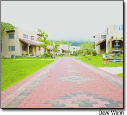
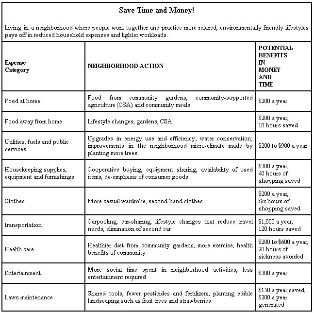

Transform suburbia into superbia!
Imagine your neighborhood with less traffic, better walking paths and large community gardens. Even better, wouldn’t it be nice to know more people on your block who would pitch in to help fix your car, watch your children or lend you the tools you need to finish that backyard deck?
Many suburban residents say they long for a stronger sense of community. In fact, a 2002 Fannie Mae study on affordable housing not only found that people overwhelmingly prefer living in a desirable community to owning a desirable house, it also noted that those interviewed about their homes referred more often to the community or neighborhood than to the residence.
But the modern suburbs, designed to accommodate the car and maximize private space, have too often neglected the important quality of community. The resulting housing developments contribute to traffic congestion and urban sprawl, while suburban lifestyles require ever-increasing amounts of money, energy and resources to maintain.
I think there’s a better way. What if we created new centers of business, recreation and art right in our neighborhoods, with slower traffic, more public space and more opportunities for cooperation and support? These possibilities are within our grasp. Across the country, people are working together to make some refreshing changes to their neighborhoods.
Saving Time and Money
For the last eight years, living in a friendly, close-knit community in Golden, Colo., has saved me money on gas, parking, food, medical bills, insurance premiums and other expenses, not to mention a lot of stress on the highways. Because I work at home, walk to stores for exercise, and have friends and recreation (a large community garden) in my neighborhood, I’m not even driving enough to keep my car’s battery charged. Luckily, I’m able to borrow my neighbor’s battery charger, which I’ve done several times.
The typical U.S. household spends about 19 percent of its disposable income on transportation, and we each average 450 hours in our cars and trucks every year! But when more of what we need is right in our neighborhoods, we may get in the car 10 times a week rather than 10 times a day.
And that’s just a starting place. Nearly every category of household expenses could be trimmed if our neighborhoods were communities, rather than cul-de-sacs and rows of houses. When you add it all together, the savings are impressive (see “Save Time and Money,” Page 50).
Improving Our Health
According to Richard Jackson, former director of the National Center for Environmental Health, “The diseases of the 21st century will be chronic diseases such as diabetes, obesity, asthma and depression that steal vitality and productivity, and consume time and money. These diseases can be moderated by how we design, build and maintain our human environment.”
Physical activity helps maintain our health in many ways. In fact, it’s as effective as prescription drugs for treating mild cases of anxiety and depression, Jackson says. And it’s much easier to be physically active if our neighborhoods are safe to walk in, with stores, parks and other destinations within easy traveling distance by foot or bike.
Physical features of suburban neighborhoods also directly affect the social health of their residents. For example, the average number of friends a person has within his or her neighborhood correlates with the speed and volume of street traffic. Sociologist Donald Appleyard discovered that on a street with light traffic - 2,000 vehicles a day - residents had about 10 friends and acquaintances in the neighborhood, as compared to a street with heavy traffic - 16,000 vehicles a day - where residents had only four acquaintances, including 0.9 friends. And what kind of a friend is that?
Doctors tell us one of the most important factors in maintaining our health is a strong sense of community. In the book The Power of Clan, authors Dr. Stewart Wolf and John Bruhn analyze a multi-decade study of Roseto, a small town in eastern Pennsylvania, where resident longevity is legendary and, at the time of the study, heart disease rates were well below the national average. Wolf and Bruhn attribute the town’s remarkable health to three-generation bonding in families, neighborliness, devoted churchgoing and membership in social organizations.
It seems that to have a high quality of life, we need to exchange support and admiration with other people. According to anthropologist Margaret Mead, for 99 percent of human history, we’ve lived in clans of 12 to 36 people. We’re hard-wired to stick together.
Designing Superbia
By working together, neighbors create a support group that can help individuals challenge the unsustainable practices embedded in our everyday lives. Below are just a few of the many possibilities for community cooperation: (For more ideas, see Pages 48 and 49.)
• Lawn Care. Many neighborhoods appear to practice competitive lawn care, watering and fertilizing to the richest shade of green, whatever the cost. According to the Environmental Protection Agency (EPA), homeowners apply pesticides to their lawns at a rate 20 times higher than farmers apply pesticides to their fields. Meanwhile, gasoline-powered landscape equipment accounts for more than 5 percent of urban air pollution, runoff from lawns pollutes our water, and as much as one-fifth of household garbage is yard waste, with most going directly into landfills.
What if, instead, we developed a mutually beneficial agreement with our neighbors to make front lawns more productive and less consumptive?
The book Redesigning the American Lawn suggests one sensible plan, the Freedom Lawn. The logic is simple: absorb the enemy rather than eradicate it. Wildflowers, herbs and weeds are all accepted as part of the Freedom Lawn, as long as they can tolerate the whirring blades of the lawn mower. This laid-back approach to lawn care reduces the time it takes to maintain the yard and eliminates the use of pesticides and fertilizers.
We also could encourage people to plant productive and low maintenance vegetation such as strawberries, which make an excellent ground cover, and perennial flowers. (For more ecofriendly landscaping tips, visit the EPA Web site, www.epa.gov/greenkit/landscap.htm .)
• EcoTeams. Another opportunity for neighbors to work together is house-tuning: teaming up to make each house on the block more resource efficient. The Global Action Plan’s EcoTeam Program is one example (go to www.globalaction plan.org.uk/ and click on “At Home”). More than 40,000 people in 30 U.S. states and 17 countries have participated on
EcoTeams, meeting in groups of five to eight households to discuss ways to make their homes more energy efficient. Some of their actions include using high-efficiency compact-fluorescent light bulbs and replacing old, drafty windows with efficient “low-E” windows. EcoTeams can cut annual costs in each house by $300 a year or more by reducing water and energy use.
Jennifer Olsen and Per Kielland-Lund of Madison, Wis., joined an EcoTeam in 1998. They say taking that step gave them newfound optimism that sustainable living was possible. “We were able to implement many changes in our daily lives that we, for a long time, had wanted,” Olsen and Kielland-Lund say. “Through our own direct experience, we see that necessary changes can be made.”
• Stronger Social Networks. The easiest steps to begin transforming your neighborhood involve creating a social network with potlucks, community newsletters and discussion groups. The social capital created with these first few steps enables bolder steps to be taken later. Once you get started working together as a community, you’ll find it easier to tackle big projects.
For a glimpse of what just one community can accomplish, consider the Norwood-Quince neighborhood in Boulder, Colo., which categorizes cars as “an alternative form of transportation.” Neighborhood leader Graham Hill persuaded 130 out of 210 households to buy Eco-Passes for the city’s well-run bus system. In turn, the city provides a discount on the price of the passes.
The neighbors also have excellent pedestrian access to a shopping area, open space in a nearby park, several bike/pedestrian walkways and even a solar-lighted walkway that was paid for by a grant from the city. Forty people in the neighborhood are members of a car-share club - essentially car rental by the hour - and more than 50 are members of an electric bike-share operation. The bikes are powered by solar cells incorporated into a bike locker. The neighbors are considering linking several existing bike pathways with easements through private yards.
Your neighborhood wouldn’t want to begin with these large projects, and your goals may be different than those listed above. But tangible rewards can result from simple changes in priorities and an interest in working cooperatively. And whatever your goals, creating a more sustainable neighborhood begins with a single easy step - just saying “hello” to a neighbor you haven’t met.
Dave Wann is co-author, with Dan Chiras, of Superbia! 31 Ways to Create Sustainable Neighborhoods, a Mother Earth News Book for Wiser Living from New Society Publishers (to order see Page 111 or go to www.MotherEarthNews.com ). Wann also is co-author of Affluenza: The All Consuming Epidemic, and co-director with Chiras of the Sustainable Futures Society’s Sustainable Suburbs Project ( www. sustainablecolorado.org ).
|
 |
 |
|